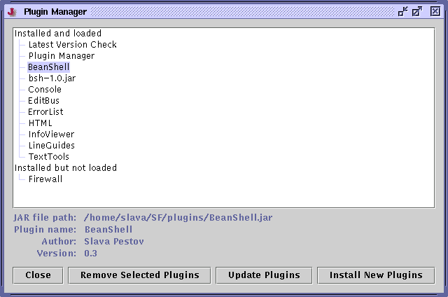

jEdit supports plugins, loadable modules of code that extend the editor's functionality. This chapter covers installation and usage of plugins.
Plugins>Plugin Manager will display the plugin manager window. It shows a list of all installed plugins. Clicking on a plugin will display information about it.
Figure 8-1. The Plugin Manager window

To remove some plugins, select them and click Remove Selected Plugins. This will issue a confirmation dialog box first.